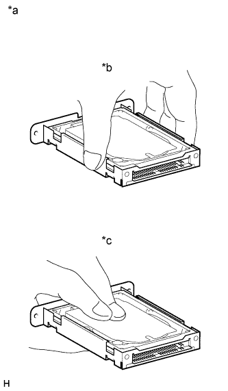

СИСТЕМА НАВИГАЦИИ (для моделей с жестким диском) > МЕРЫ ПРЕДОСТОРОЖНОСТИ |
| 1.МЕРЫ ПРЕДОСТОРОЖНОСТИ ПРИ ОТСОЕДИНЕНИИ ПРОВОДА ОТ ОТРИЦАТЕЛЬНОГО ВЫВОДА АККУМУЛЯТОРНОЙ БАТАРЕИ |
| 2.СООБЩЕНИЯ ИНДИКАЦИИ ЗАМКА ЗАЖИГАНИЯ |
| Сообщение | Замок зажигания (положение) | Выключатель зажигания (состояние) |
| Зажигание выключено | OFF (ВЫКЛ) | Выкл |
| Зажигание включено | ON (ВКЛ) | Вкл (IG) |
| Замок зажигания в положении ACC | ACC | Вкл (ACC) |
| Пуск двигателя | START | Запуск |
| 3.МЕРЫ ПРЕДОСТОРОЖНОСТИ ПРИ РАБОТЕ С ДИСПЛЕЕМ МОДУЛЯ СИСТЕМЫ НАВИГАЦИИ И ИНДИКАЦИИ |
Жесткий диск встроен в дисплей модуля системы навигации и индикации. На нем хранятся картографические и прочие данные системы навигации. Поэтому при обращении с ним требуются следующие меры предосторожности:
| *a | Пример | *b | Жесткий диск |
| *c | Дисплей модуля системы навигации и индикации | - | - |
Не подвергайте дисплей модуля системы навигации и индикации тряске или ударам.
Не снимайте дисплей модуля системы навигации и индикации, если есть опасность конденсации.
Примите меры защиты от статического электричества.
Держите дисплей модуля системы навигации и индикации вдали от магнитов и намагниченных предметов.
| 4.МЕРЫ ПРЕДОСТОРОЖНОСТИ ДЛЯ ЖЕСТКОГО ДИСКА (HDD) |
Картографические данные системы навигации хранятся на жестком диске. При замене жесткого диска обязательно выполняйте следующие инструкции:
Жесткий диск должен заменяться только новым узлом. Не пытайтесь устанавливать бывший в употреблении жесткий диск с другого автомобиля.
|  |
Не прикасайтесь к крышке жесткого диска.
| *a | Пример |
| *b | ПРАВИЛЬНО |
| *c | НЕПРАВИЛЬНО |
Не подвергайте жесткий диск тряске или ударам.
Не снимайте жесткий диск, если есть опасность конденсации.
Примите меры защиты от статического электричества.
Держите жесткий диск вдали от магнитов и намагниченных предметов.
Проверьте жесткий диск после замены.